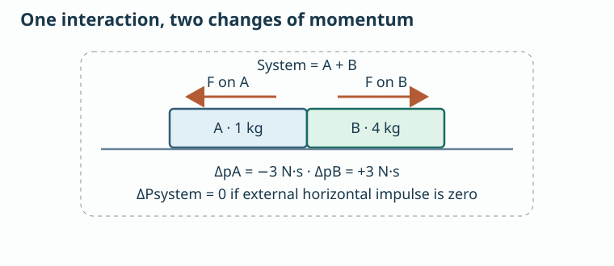
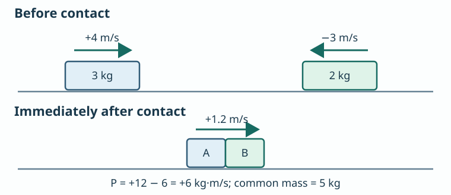
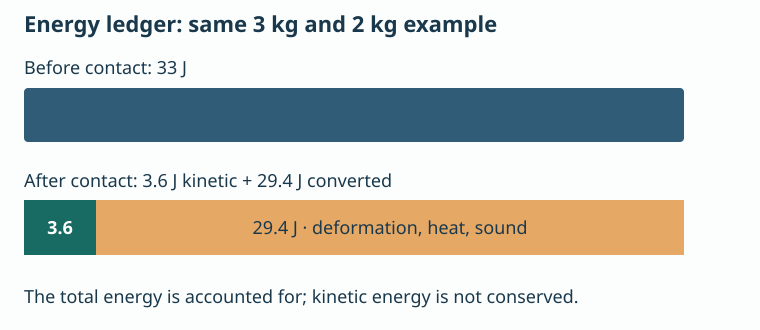
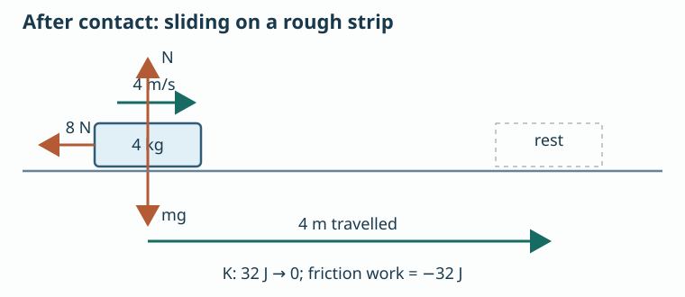
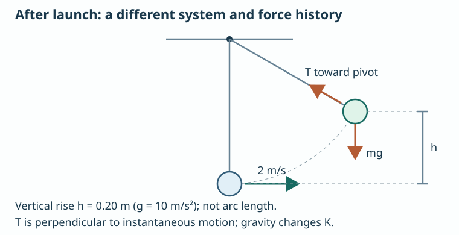

PH03-P03 · Conservation in an isolated system · source-related bridge
Which quantity survives a collision?
A collision can stop both objects, even when neither was initially at rest. A swinging catcher can rise after a collision even though much of the original kinetic energy has disappeared. How can both statements be true? Follow what changes, in which system, and over which time interval.
Two ways of describing motion
Velocity has direction. Choose right as positive in an inertial laboratory frame. A mass m moving with signed velocity v has horizontal momentum p = mv, measured in kg·m/s. Its kinetic energy K = ½mv², measured in joules, is never negative. Two objects with opposite momenta can cancel; their kinetic energies add. A force acting briefly transfers momentum by impulse J = ∫F dt; a force acting through displacement transfers energy by work W = ∫F·ds. N·s and N·m are different units.
| Question | Momentum | Kinetic energy |
|---|---|---|
| Direction matters? | Yes, signed component | No, speed squared |
| Change caused by | Net impulse (N·s) | Net work (J) |
| For 2 kg at −3 m/s | −6 kg·m/s | 9 J |
Why internal forces cannot change total momentum
Imagine two sliding blocks during the instant they touch. Each feels a force from the other; the pair of forces acts on different bodies, so it does not cancel on either body. Over the same contact interval the impulses are equal and opposite. For a fixed pair, adding Newton's second law in impulse form cancels internal impulses and leaves the external impulse only.

In an isolated horizontal interval, Jexternal,x = 0. Vertical weight and support forces do not contribute horizontal impulse. This is a statement about the chosen system and interval, not a statement that no forces exist. For a latching pair of total mass M, pbefore = M V immediately after contact. If a substantial horizontal external impulse acts, use Pafter = Pbefore + Jexternal,x instead.
Track two separate impulses
A 1 kg block initially moves right at 6 m/s; a 4 kg block is at rest. During a brief contact the first receives −3 N·s from the second. Ignore horizontal external impulse. They do not have to latch.
- Before: pA = +6, pB = 0 kg·m/s.
- Newton's third law gives ΔpB = +3 N·s. Therefore pA after = 6−3=3 and pB after = 0+3=3 kg·m/s.
- Divide by each mass: vA = +3 m/s and vB = +0.75 m/s. Equal impulse magnitudes have not produced equal velocities.
- Check: total momentum 6 kg·m/s before and after; individual momenta changed. The data do not specify a sticking collision, so do not assume a common velocity.
Opposite momenta, one common velocity
A 3 kg block at +4 m/s and a 2 kg block at −3 m/s latch on a smooth horizontal rail. Neglect external horizontal impulse.

| Body | Momentum (kg·m/s) | Kinetic energy (J) |
|---|---|---|
| A before | 3×4 = +12 | ½×3×16 = 24 |
| B before | 2×(−3) = −6 | ½×2×9 = 9 |
| Total before | +6 | 33 |
| Joined after | 5×1.2 = +6 | ½×5×1.44 = 3.6 |
- Choose both bodies and right-positive signs; the larger initial momentum magnitude points right.
- Set 3(4)+2(−3)=5V. V=+1.2 m/s; the joined body goes right.
- Compare kinetic energies: 33−3.6=29.4 J becomes other energy forms in the impact.

Why does the relative-speed check work?
Insert V=(m₁u₁+m₂u₂)/(m₁+m₂) into Kbefore−Kafter. Expand the square in the numerator; the terms combine to m₁m₂(u₁−u₂)²/[2(m₁+m₂)]. This is nonnegative for any real velocities, and is zero only when the velocities match. Here ½(6/5)(7²)=29.4 J. This identity assumes negligible external impulse and a common final velocity; it is not a universal collision-loss formula.
Explore the cancellation and reversal thresholds
New system: a 2 kg block moves at +4 m/s; a 1 kg partner has adjustable signed velocity. They latch with zero external horizontal impulse. Predict what happens at −8 m/s and below before moving the control. Then find when there is no relative motion to begin with.
At cancellation, P=0, not Kbefore=0. At velocity matching, the ideal algebra gives zero conversion; no actual overtaking impact occurs if the blocks never approach.
After contact: a force from outside the system
A 4 kg body is already sliding right at 4 m/s on a level rough strip. μk=0.20, g=10 m/s². No other horizontal forces act. How far does it travel before rest?

- Vertical acceleration is zero, so N=mg=40 N. Sliding friction magnitude μkN=8 N, opposite motion.
- Initial K=½×4×16=32 J. At rest K=0. Work by friction is −8s J, where s is positive distance in metres.
- ΔK=−32=−8s, hence s=4 m. Check with acceleration a=−8/4=−2 m/s² and 0=16−4s.
- Momentum decreases by 16 kg·m/s; with a=−2 m/s² stopping time is 2 s, and impulse −8×2=−16 N·s. This is an external impulse, not a contradiction of the isolated-contact law.
Use kinetic friction only for a sliding body with constant coefficient, a level surface, and no additional work. A freely rolling cart may require rotational energy and a different friction model.
Why a suspended catcher rises
A 2 kg point-like bob on a light inextensible string is already moving tangentially at 2 m/s at its lowest point. It rises to a turning point below the pivot, with the string remaining taut. Use g=10 m/s², no air resistance, and a fixed frictionless pivot. This is a separate invented example, not the original examination figure.

- The bob's velocity is tangent to the circle; string tension points toward the pivot, perpendicular to that motion. Its work is zero.
- Gravity does negative work as the bob rises. At the turning point K=0, so ½mv²=mgh.
- h=v²/(2g)=4/20=0.20 m. Check: starting K=4 J, gain in gravitational energy=2×10×0.20=4 J.
- If a 1 J energy loss occurs, only 3 J goes into gravitational energy, and h=0.15 m. If the string slackens, the constrained swing model is no longer valid.
During a short horizontal embedding event at the bottom, the initially vertical string has negligible horizontal impulse in the ideal short-contact approximation. During the subsequent swing, tension and gravity change momentum direction and magnitude; horizontal momentum is not conserved. Only the post-contact mechanical energy is conserved in an ideal swing. Do not feed the pre-impact kinetic energy directly into the height equation.
What if the system is not isolated?
In the 3 kg/2 kg anchor, suppose an external device gives the pair −1 N·s during contact. Initial P=+6 kg·m/s; final P=+5 kg·m/s, so V=+1 m/s, not +1.2. The impulse does not tell us the external work: a force may act over different displacements for the same impulse. Therefore the kinetic-energy decrease alone cannot always identify internal conversion. This distinction matters when reading an experiment with an external brake or support.
Wrong shortcut: using initial K=33 J as final K in the latching example would yield V=√(66/5)≈3.63 m/s and P≈18.2 kg·m/s, contradicting the known initial P=6. The first failure is choosing the wrong conserved quantity.
Check your understanding without copying an anchor
A pair is seen at rest after an interaction. A friend says the two initial velocities must have been zero. Is this inference valid? Give a counterexample and explain what extra observation would allow you to calculate initial momentum.
Compare your explanation
No. Equal and opposite total incoming momenta can cancel even when both kinetic energies are positive. For example, 1 kg at +2 m/s and 2 kg at −1 m/s have total P=0. If external impulse is known to be zero, Pbefore=Pafter=0; this still does not determine both individual velocities. If the external impulse is unknown, even total initial momentum is not determined.
Always identify the time interval, system, signs, external impulse and work before applying a conservation relation. The next tasks ask you to make those choices from measurements, not to copy the worked anchors.